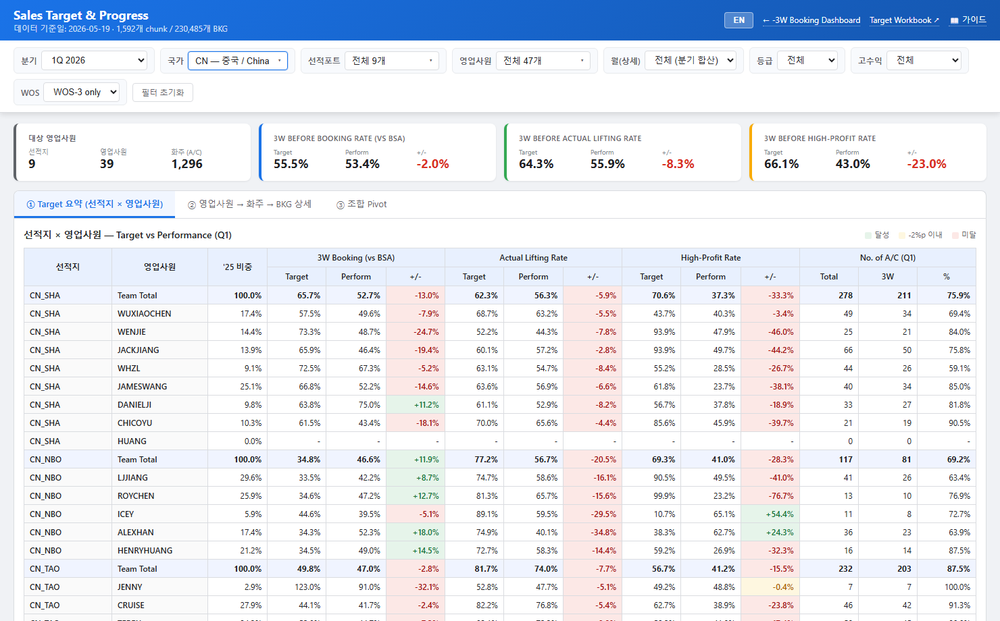
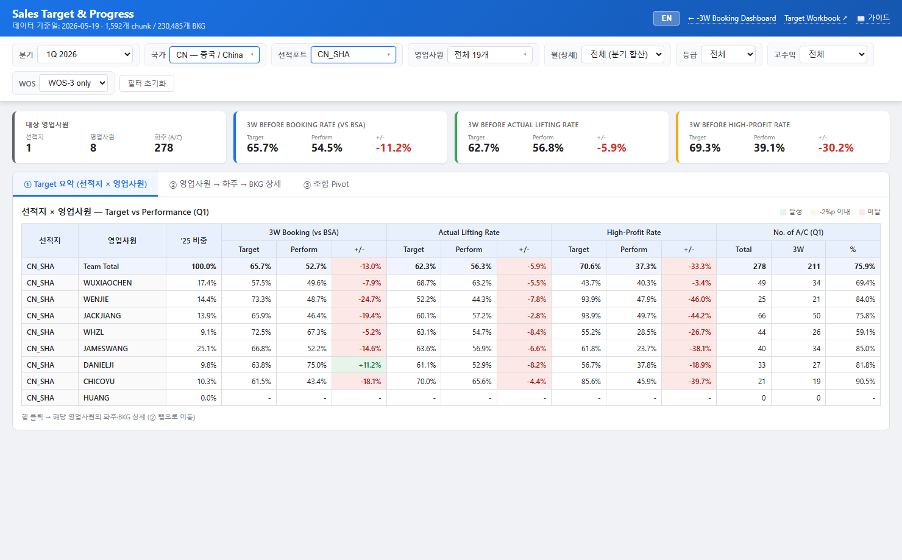
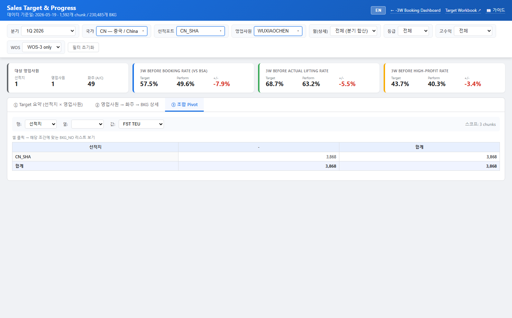
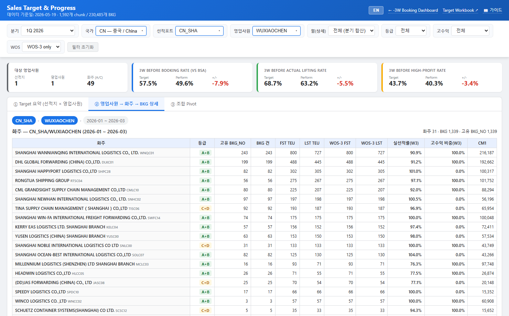

목차
1. 화면 개요
Sales Target & Progress 화면은 영업사원들이 본인의 목표 대비 실적을 구간별(선적지) → 영업사원 → 화주 → 부킹번호(BKG_NO) 까지 4단계로 디테일하게 확인할 수 있는 전용 화면입니다. -3W Booking Dashboard와 같은 데이터(매일 갱신되는 부킹 스냅샷)를 사용하지만, 목표(Target) 시트의 수치와 결합하여 Target / Performance / GAP 관점으로 보여줍니다.

3가지 view 모드
| View | 용도 | 입력 |
|---|---|---|
| ① Target 요약 | 선적지 × 영업사원 단위로 3개 KPI의 Target / Perform / GAP을 한 화면에 본다 | 아무것도 선택 안 해도 됨 |
| ② Drill (드릴다운) | 선택한 영업사원의 화주별 실적과 그 안의 BKG_NO 리스트까지 확인 | 국가 또는 포트 + 영업사원 1명 이상 선택 |
| ③ 조합 Pivot | 행 × 열 × 측정값을 자유 조합. 셀 클릭 시 매칭 BKG_NO 리스트 표시 | 가능한 좁히는 게 응답 빠름 |
2. 접근 / 진입 경로
- 메인 대시보드 헤더의 🎯 Sales Target 버튼 클릭 → 새 탭에서 열림
- URL:
https://jkpark-create.github.io/kmtc-3w-dashboard-web/sales-target/ - 메인 대시보드의 ② 부킹 트렌드 → 영업사원별 표에서 우측 "→" 링크 클릭 → 해당 영업사원으로 자동 드릴
3. 헤더 / 언어 전환
상단 헤더는 좌측에 제목과 데이터 기준일, 우측에 다음 버튼이 있습니다.
- EN / KO 토글 — 화면 전체 언어 전환. 선택 상태는 브라우저에 저장되어 다음 방문 시에도 유지.
- ← -3W Booking Dashboard — 메인 대시보드로 돌아감
- Target Workbook ↗ — 데이터의 원천이 되는 Google Sheets 워크북 새 탭으로 열기
- 📖 가이드 — 이 페이지
4. 필터 바 사용법
필터 바는 7개의 그룹으로 구성됩니다. 모두 즉시 반영되며, 변경 시 화면이 자동 갱신됩니다.
| 필터 | 역할 | 기본값 |
|---|---|---|
| 분기 | 1Q 2026 (Target vs Perform) 또는 2Q 2026 (Target vs Progress) 선택 | 1Q 2026 |
| 국가 | 다중선택. 선택 시 아래 포트 옵션이 그 국가의 포트로 좁아짐 | 전체 11개 |
| 선적포트 | 다중선택. 위에서 선택된 국가의 포트만 보임. 시트 화이트리스트 외 포트는 표시되지 않음 | 전체 |
| 영업사원 | 다중선택. 위 국가+포트 범위 안의 영업사원만 옵션으로 노출 | 전체 (선적지 범위 기준) |
| 월(상세) | 분기 합산 또는 단일 월(202601~202606). ②, ③ view에서 영향 | 전체 (분기 합산) |
| 등급 | 화주 등급. 전체 / A+B / C+D 3개만 제공 | 전체 |
| 고수익 | 전체 / 고수익만 / 고수익 제외 (구간별 고수익 태그 기준) | 전체 |
| WOS | WOS-3 only (기본) 또는 전체 — Target/Performance는 모두 WOS-3 기준 | WOS-3 only |
| 필터 초기화 | 모든 선택을 기본값으로 리셋 | — |
5. 국가 / 포트 / 영업사원 다중선택
국가, 선적포트, 영업사원 세 필터는 모두 다중선택(체크박스 방식)이며 동일한 동작을 합니다.
5.1 기본 동작
- 필터 박스(▾ 표시)를 클릭하면 드롭다운 패널이 열립니다.
- 상단의 전체 선택 / 해제 버튼으로 일괄 조작 가능.
- 검색창에 텍스트를 입력해서 옵션을 빠르게 좁힐 수 있습니다.
- 체크박스 클릭 시 즉시 화면이 갱신됩니다. (패널이 계속 열려 있어 여러 개를 연속해서 선택 가능)
- 패널 바깥을 클릭하면 닫힙니다.
- 0개 선택 = 전체 동일.


5.2 화이트리스트 — 허용된 선적지
다음 11개 국가 · 23개 포트만 필터에 노출되고 데이터에 반영됩니다. (Target 시트의 OBT 대상과 일치)
| 국가 | 설명 | 포트 |
|---|---|---|
| CN | 중국 / China | CN_SHA, CN_NBO, CN_TAO, CN_XGG, CN_DLC, CN_LYG, CN_SHK_DCB, CN_XMN, CN_NNS |
| HK | 홍콩 / Hong Kong | HK |
| TW | 대만 / Taiwan | TW |
| TH | 태국 / Thailand | TH |
| VN | 베트남 / Vietnam | VN_SGN_CMP, VN_HPH |
| PH | 필리핀 / Philippines | PH |
| MY | 말레이시아 / Malaysia | PKG+PKW, PEN, PGU |
| SG | 싱가포르 / Singapore | SG |
| ID | 인도네시아 / Indonesia | JKT, SUB |
| IN | 인도 / India | IN |
| AE | UAE | AE |
6. 상단 KPI 카드
화면 상단의 4장 카드는 현재 필터 범위에 대한 요약 수치입니다.
| 카드 | 의미 |
|---|---|
| 대상 영업사원 | 현재 필터 안에 들어오는 선적지 수 / 영업사원 수 / 화주(A/C) 수 |
| 3W Booking Rate | 3W before Booking Rate (vs BSA). Target / Perform / +- (퍼센트 포인트) |
| Actual Lifting Rate | 3W before Actual Lifting Rate. Target / Perform / +- |
| High-Profit Rate | 3W before High-Profit Customer Rate. Target / Perform / +- |
+- 셀의 색상: 달성 (양수) / -2%p 이내 / 미달
필터를 좁힐수록 카드 수치도 그에 맞게 좁아진 평균치로 다시 계산됩니다.
7. ① Target 요약 (선적지 × 영업사원)
가장 기본이 되는 표. 한 행 = 한 영업사원 (또는 선적지 Team Total). 3개 KPI별로 Target / Perform / +- 가 표시됩니다.
주요 컬럼 의미
| 컬럼 | 의미 |
|---|---|
| '25 비중 | 2025년 해당 영업사원의 Total Lifting 비중 (선적지 기준) |
| 3W Booking (vs BSA) | WOS-3 시점 BKG TEU ÷ BSA TEU |
| Actual Lifting Rate | WOS-3 시점 BKG 중 실제 선적된 비율 |
| High-Profit Rate | WOS-3 BKG 중 고수익 화주 BKG 비중 |
| Target | 2025_base + Input %p 누적치. 입력은 Target Workbook의 Target_Input/Targets 탭에서 |
| Perform / Progress | 실제 수행률. 1Q는 Perform(완료된 분기), 2Q는 Progress(진행 중) |
| +- | Perform - Target. 양수=달성, 음수=미달 |
| No. of A/C — Total / 3W / % | Q1 화주 수: 전체, WOS-3 단계 도달, 비율 |
8. ② 영업사원 → 화주 → BKG 상세 (Drill)
특정 영업사원의 실적을 화주 단위까지 분해해 보여줍니다.

표 컬럼
| 컬럼 | 의미 |
|---|---|
| 화주 / 등급 | 화주명 + (Shipper code) + A/B/C/D 등급 |
| 고유 BKG_NO / BKG 건 | 중복 제거된 부킹번호 개수와 row 건수 |
| FST TEU / LST TEU | 발주된 TEU와 실제 선적된 TEU |
| WOS-3 FST / WOS-3 LST | WOS-3 시점 FST/LST TEU |
| 실선적률(W3) | WOS-3 LST ÷ WOS-3 FST |
| 고수익 비중(W3) | WOS-3 BKG 중 고수익 태그 비중 |
| CM1 | 해당 화주의 누적 CM1 |
8.1 화주 행 클릭 → BKG_NO 상세 펼치기
임의의 화주 행을 클릭하면 그 화주의 BKG_NO 리스트가 펼쳐집니다.

BKG 상세 컬럼
- BKG_NO: 부킹 번호 (KMTC 시스템 ID)
- POL→POD: Port of Load → Port of Discharge (필요 시 final delivery까지)
- VSL/VOY: 본선/항차
- Booking: Booking 등록일
- FST TEU / LST TEU: 발주 / 실선적 TEU
- CM1 / CM1/TEU: 수익 / TEU당 수익
- WOS: Weeks-Out-Of-Schedule 단계 (WOS-1/2/3 등)
- 등급: 화주 등급 (A/B/C/D)
- 고수익: HI 또는 공란
- 상태: 실선적 / 캔슬 / 진행중
9. 전체 매칭 BKG_NO 보기 + CSV 내보내기
② 화면의 화주표 아래에는 "조건에 맞는 전체 BKG_NO 보기" 토글 패널이 있습니다. 화주별로 펼치지 않고 현재 필터 조건에 매칭되는 모든 BKG를 한 표에 보여주며, CSV로 내보내기가 가능합니다.

특징
- 패널 헤더에 몇 건 매칭되는지와 현재 활성 필터 요약이 표시됩니다.
- 화면에는 최대 1000건까지 표시되며, 전체는 CSV 내보내기로 받을 수 있습니다.
- CSV는 UTF-8 BOM 포함 → 한글이 Excel에서 정상 표시됩니다.
10. ③ 조합 Pivot
행/열/측정값을 자유롭게 조합해서 BKG 단위 데이터를 집계하는 화면입니다.


10.1 차원(행/열) 옵션
| 옵션 | 의미 |
|---|---|
| 선적지 | POR (예: CN_SHA) |
| 영업사원 | Salesman_POR |
| 화주 | BKG_SHPR_CST_ENM |
| 등급 | A/B/C/D의 첫 글자로 그룹 |
| POD 국가 / POD 항구 | POD_CTR_CD / POD_PORT_CD |
| 월 | YYYYMM |
| 고수익 여부 | 고수익 / 일반 (열에만) |
| WOS 단계 | WOS-1, WOS-2, WOS-3, ... |
10.2 측정값 옵션
- FST TEU / LST TEU / WOS-3 FST / WOS-3 LST
- BKG 건수 / 고유 BKG_NO 수 / 화주 수
- CM1 / CM1/TEU
10.3 셀 클릭 → 매칭 BKG_NO 리스트
Pivot 셀(값이 있는 셀)을 클릭하면 그 행×열 조합에 속한 BKG_NO 리스트가 표 아래 패널로 표시됩니다. 패널은 CSV 내보내기와 닫기 버튼이 있습니다.

11. 메인 대시보드와의 연동 (Deep link)
메인 대시보드 → ② 부킹 트렌드 → 영업사원별 표에는 우측 끝에 → 링크가 있습니다. 이 링크를 클릭하면 그 영업사원의 드릴 화면으로 바로 진입합니다.

?origin=CN_SHA&sales=WUXIAOCHEN&quarter=q1&view=drill URL로 진입 — 자동으로 country=CN, port=CN_SHA, sales=WUXIAOCHEN이 설정되고 ② Drill 모드로 진입.URL 파라미터
| 파라미터 | 예시 | 의미 |
|---|---|---|
| quarter | q1, q2 | 분기 |
| view | summary, drill, pivot | 진입 view |
| country / countries | CN 또는 CN,VN | 국가 다중선택 (콤마) |
| origin / origins | CN_SHA 또는 CN_SHA,VN_HPH | 포트 다중선택 (콤마) |
| sales | WUXIAOCHEN,WENJIE | 영업사원 다중선택 |
| month | 202604 | 특정 월 |
| grade | AB, CD | 화주 등급 |
| profit | HI, NOTHI | 고수익 필터 |
| wos | W3, ALL | WOS 필터 |
12. 데이터 흐름 / 갱신 주기
이 화면이 사용하는 데이터는 매일 자동 갱신됩니다.
일일 갱신 파이프라인
- Tableau 데이터 다운로드 (1.csv, 2.csv) → 부킹 스냅샷 생성 (booking_snapshot_result_*.csv)
- 대시보드 데이터 빌드 (dashboard_summary_*.json)
- Sales Target 빌드 (이 화면) — Summary_All 시트 읽기 + 부킹 스냅샷 집계 → index.json + 1592개 chunk JSON 생성
- GitHub Pages에 커밋 + 푸시 → 1시간 내 라이브 반영
출력 파일 구조
dist/sales-target/index.json— 191 row의 Target/Perform/GAP 요약 (Summary_All 미러)dist/sales-target/manifest.json— 사용 가능한 (origin, salesman, month) chunk 카탈로그dist/sales-target/data/<origin>__<salesman>__<YYYYMM>.json— 각 chunk (lazy load)
13. 목표 입력 (Eternal Workbook)
Target 수치는 다음 두 가지 워크북에서 관리됩니다.
| 워크북 | 역할 |
|---|---|
2026 OBT Sales Target by 선적지1YxZkwvoMaQ... | 기존의 36-탭 리포트 워크북. Summary_All에서 Target/Perform/GAP 수식을 계산 → 이 화면이 읽음. 이 워크북은 자동 계산용. |
OBT Sales Target Input (Eternal)13BSBBs-McCCH... | 새로 만들어진 입력 전용 워크북. Year 컬럼으로 연도 관리 (영원히 한 URL). |
13.1 Eternal Workbook 구조
| 탭 | 내용 |
|---|---|
| README | 워크북 사용 안내 + 화이트리스트 |
| Settings | Active_Year (현재 활성 연도), Admins (편집 권한 이메일), Last_Reviewed, Notes |
| Targets | Year × Tab (23개 포트) 입력 표 — Booking/Lifting/High-Profit Input %p + Memo |
| Audit | 변경 이력 (append-only) |
13.2 매년 롤오버 절차
- Targets 탭에 다음 연도(예: 2027)의 row 23개를 append
- Settings의 Active_Year를 새 연도로 변경
- 관리자 권한(Admins) 갱신
- (필요시) 리포트 워크북도 새 연도 컬럼/탭으로 확장
14. 자주 묻는 질문
Q1. 화면에 내 데이터가 안 보입니다.
다음을 확인하세요:
- 국가/포트 필터가 너무 좁게 설정되어 있지 않은가? → "필터 초기화" 클릭
- 등급/고수익 필터가 데이터를 모두 제거하지 않았는가?
- 해당 영업사원이 화이트리스트에 포함된 선적지에 속해 있는가? (TW, ID_out 등 일부 origin은 OBT 외이므로 제외됨)
Q2. Target 컬럼이 비어 있어요.
해당 영업사원이 2025_basis가 없는 (1Q 2026 신규 진입) 또는 Target Workbook의 Targets 탭에 row가 없는 경우입니다. 관리자가 입력해야 합니다.
Q3. 같은 영업사원이 두 선적지에 보입니다.
한 영업사원이 복수 선적지의 화주를 담당하는 케이스입니다. 정확한 합산을 보려면 ① Target 요약 표에서 그 영업사원의 모든 row를 비교하세요.
Q4. CSV 내보내기로 받은 파일이 너무 크면?
Pivot 셀 → CSV 내보내기를 쓰면 그 셀에 속한 행만 받을 수 있어 보통 훨씬 작습니다.
Q5. 데이터가 어제까지밖에 안 보여요.
일일 자동 갱신이 매일 새벽에 한 번 실행됩니다. 헤더의 "데이터 기준일"을 확인하세요. 24시간 이상 된 경우 운영 담당자에게 문의하세요.
Q6. 영어로 전환하고 싶어요.
헤더 우측의 EN 버튼을 클릭하세요. 선택은 브라우저에 저장됩니다. 다시 한국어로 돌아가려면 KO 클릭.
Q7. 한 영업사원이 안 보입니다.
그 영업사원의 모든 booking이 (a) 화이트리스트 외 origin이거나 (b) 1Q에 화주가 0명이거나 (c) Target Workbook Summary_All에서 제외된 케이스일 수 있습니다. 일단 ① Target 요약에서 검색해 보세요.
© KMTC OBT — Sales Target & Progress · 이 문서는 자동 검증된 스크린샷을 사용해 작성되었습니다.
질문 / 버그 신고는 운영 담당자에게.